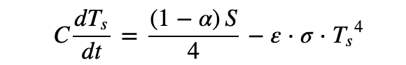

Earth Temperature Integrator (Background)¶
Objective¶
We want to build an integrator that evolves the Earth’s temperature over time given certain initial conditions.
Our model will assume the Earth’s initial surface temperature is 0K, which is obviously a ridiculous assumption. The benefit in starting the temperature from scratch is that you can see how the initial conditions dictate the evolution of the Earth’s temperature. Eventually, our model’s temperature will level off, and energy balance will have been achieved.
First, we’ll start by defining our initial conditions, and getting into the weeds of the terminology.
Variable Initial Conditions¶
There are three variable properties which dictate the evolution of the Earth’s temperature in our model:
Albedo¶
The albedo, a value between 0 and 1.0, defines the percentage of energy received by a body that it reflects back. An albedo of 0.5, for instance, means that the body absorbs 50% of the energy it recieves.
Earth’s average albedo is 0.32. This is a simplification, as different parts of Earth’s surface have very different albedos. For our purposes, however, this will suffice.
Solar Flux¶
How much energy the Sun the sends to the Earth, in units of watts per square meter. It varies slightly as the sun evolves, but not significantly. It is about 1373 W/m2.
Emissivity¶
A value between 0 and 1.0 that represents how much energy is emitted by the atmosphere. For example, if an atmosphere has an emissivity of 0.6, that means it emits 60% of the energy it recieves.
The emissivity of the Earth’s atmosphere is best approximated at 0.78. This is where we make our greatest simplification. In reality, the atmosphere is extremely complex, and how much energy is absorbed depends on its chemical composition. Varying the emissivity can capture changes in the atmospheric composition loosely, and sufficiently enough for our purposes, but it’s still important to note it’s a simplification.
Now that we know our variables, we can get aquainted with the equations we want to integrate.
Equations¶

This is the equation that ties everything we’ve discussed together.
C is the heat capacity of Earth, a constant.
dT/dt is the change in surface temperature of Earth over time.
The first term on the right represents the flux from the sun that the surface recieves. S represents the solar flux, and alpha the albedo. The scaling factor of 1/4 comes from the derivation (see: Stefan-Boltzman Law).
The second term on the right represents the energy that the Earth radiates back to space, with epsilon being the emissivity and sigma being the stefan boltzman constant.
We make some slight adjustments to this equation when integrating, but that will be discussed more with the actual code. In particular, we’ll be incorporating a term for the atmosphere (not found in this version).